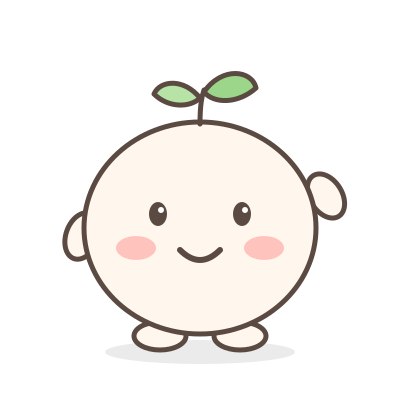
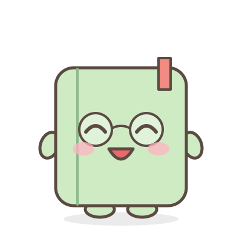

PAPER READING · Information & Management 2026
讓介面
幫你減壓
為什麼有些網站讓人好累？
一個小小的設計改變，能不能讓人少一點壓力？
📄 Valta, Maier & Hildebrandt (2026). Designing away technostress
今天一起來讀
一篇論文吧！
一篇論文吧！



KEY CONCEPT 01
這種壓力有個名字：Technostress（科技壓力）
使用資訊系統時產生的壓力。同樣是「系統很複雜」，人會有兩種不同的感受：
 😣 Hindrance 阻礙型
😣 Hindrance 阻礙型
「這系統在擋我的路！」
- 資訊不清楚、導覽複雜、一次塞太多
- 可能導致倦怠、放棄任務、不想再用
 💪 Challenge 挑戰型
💪 Challenge 挑戰型
「有點難，但我能學到東西。」
- 工作量大、承擔新的責任
- 可能帶來成長和正面結果
這篇研究只看「阻礙型」：因為它和負面後果的關聯最一致。
同一件事，感受
可以完全不同喔！
可以完全不同喔！

出處：wiki/concepts/Technostress · 論文 §2.1
FINDING 01
兩種 nudge 都讓壓力明顯下降
阻礙型壓力分數（1 = 完全沒有，7 = 非常強烈）
07
差距約 0.6 分，屬於中到大的效果
兩種 nudge 之間沒有顯著差異
📝 Takeaway
任務沒有變簡單，
只是換個方式呈現，
壓力就變小了。
我也覺得
輕鬆多了～
輕鬆多了～
詳細數據
統計結果（論文 §5.2）
| 條件 | N | 平均 (SD) | Cohen's d | 迴歸 total effect β |
|---|---|---|---|---|
| 控制組 | 71 | 5.47 (0.87) | — | — |
| 預設選項 | 70 | 4.87 (1.03) | −0.63 | −0.439** |
| 視覺突顯 | 73 | 4.84 (1.15) | −0.62 | −0.580*** |
- One-way ANOVA：F(2, 211) = 8.57, p < .001
- 兩種 nudge 之差：mean diff = 0.03, p = .87, 95% CI [−0.33, 0.39]
- β 看起來 salience 比較大，但作者沒有正式檢定哪一種比較好
** p < .01, *** p < .001 ｜ 出處：wiki/papers/Valta2026-Technostress-Nudges §5.2
出處：wiki/papers/Valta2026-Technostress-Nudges · 論文 §5.2